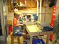

Past Projects
One project I did this summer was to build a workbench for my lab. It's about a meter high and perfect for
working on computers on. Here I am putting the finishing touches on it....

A couple of action shots.... in the first one my 7 year old is upgrading the RAM in a Cisco 2600.
In the next one there is a shot of my Asus netbook on the same bench.


Another one from this summer... a new Linux cluster, whoo! The first shot is the pile of stuff before I started.
The second shot is everything on a cart, powered up and installing x86_64 Slackware.


Once the cluster was up and running I went through and put in things like SSH between all nodes with no password
and a special shell for clusters called PDSH. Next I put in
something called distcc that allows you to farm out pieces of a compilation
across multiple computers.
Once distcc was in place, I grabbed the latest Linux kernel, unpacked it into /usr/src, and tried to build it on a
single node with the command "time make", like so:
Root device is (8, 2)
Setup is 12092 bytes (padded to 12288 bytes).
System is 4164 kB
CRC fa46fae4
Kernel: arch/x86/boot/bzImage is ready (#2)
Building modules, stage 2.
MODPOST 3 modules
CC arch/x86/kernel/test_nx.mod.o
LD [M] arch/x86/kernel/test_nx.ko
CC drivers/scsi/scsi_wait_scan.mod.o
LD [M] drivers/scsi/scsi_wait_scan.ko
CC net/netfilter/xt_mark.mod.o
LD [M] net/netfilter/xt_mark.ko
real 11m25.531s
user 10m19.904s
sys 1m11.601s
So... about 11 minutes and 30 seconds.... now let's see what the cluster can do... I gave it a "make clean;
time make -j8 CC=distcc" and got:
Root device is (8, 2)
Setup is 12092 bytes (padded to 12288 bytes).
System is 4165 kB
CRC 78e7e147
Kernel: arch/x86/boot/bzImage is ready (#3)
real 2m3.243s
user 2m15.086s
sys 0m41.254s
Not bad at all! So that is about 17% of the time it took for a single node in this configuration. After that I
managed to get Hadoop and Hive installed and write a few basic code chunks just to see it work. I have an idea for a
much bigger project when i get some time.